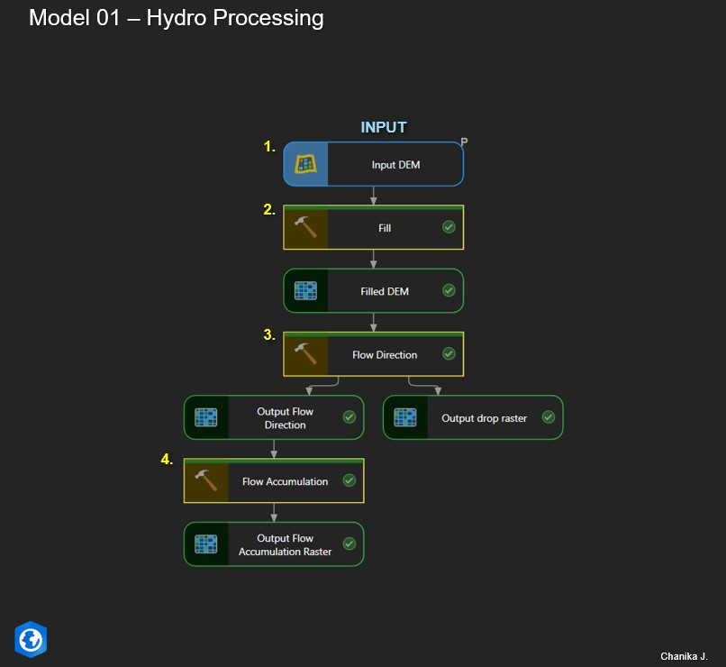
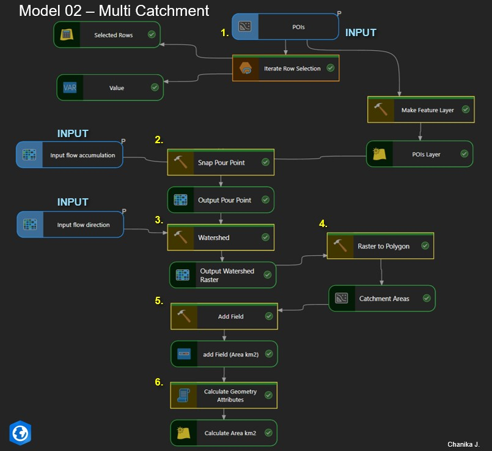
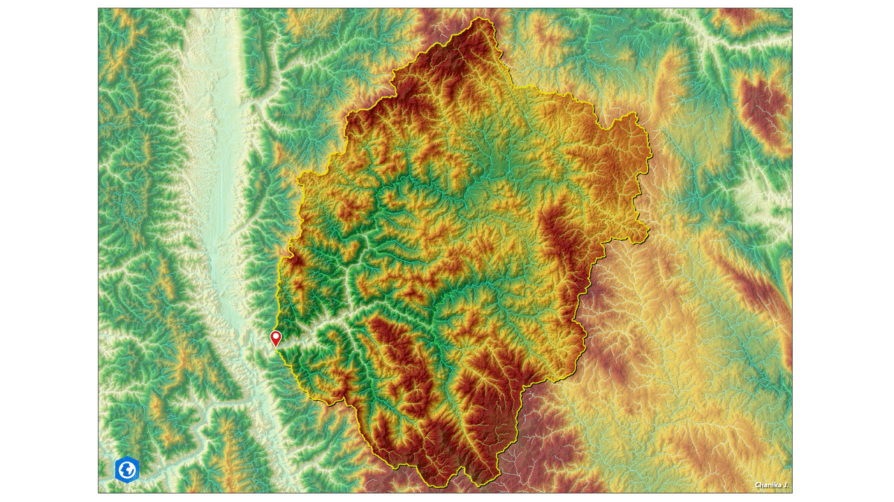

This project demonstrates an automated hydrological workflow for multi-catchment delineation using ArcGIS Pro ModelBuilder. The system processes DEM data to derive flow direction and flow accumulation rasters, automatically snaps outlet points to the drainage network, and delineates watershed boundaries. The resulting catchments are converted to polygons with calculated area attributes, enabling efficient watershed analysis for hydropower and water resource studies.
This analysis was performed using DEM data derived from SRTM (Shuttle Radar Topography Mission), © NASA / USGS.